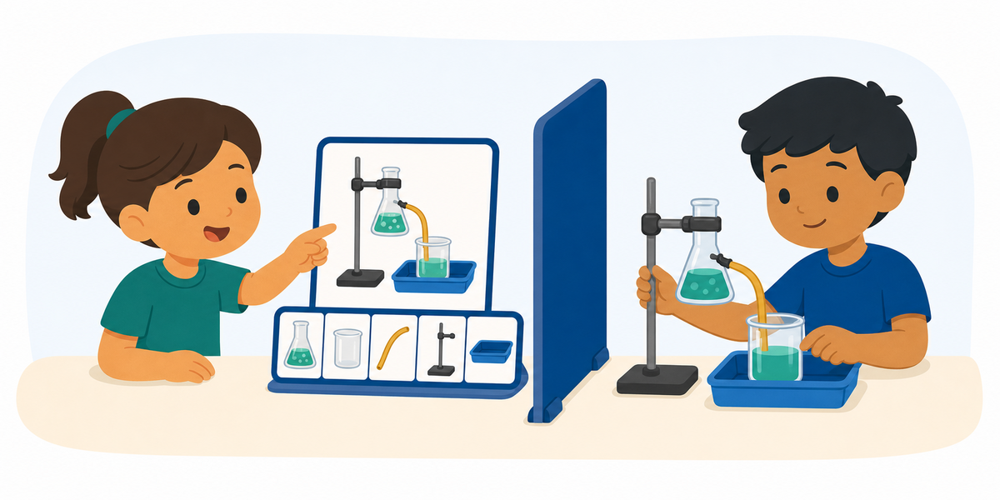

Activity 84 ·
Experimental-Setup Build

Materials Safe classroom science equipment or picture cards.
What to describe
One student views a completed experimental setup and gives directions for assembling or diagramming it. ---
Roles
How a round works
Make it harder or easier
Harder
Go one-way — no questions allowed — or cap the Describer at thirty words. Add a Messenger who cannot see either model.
Easier
Allow yes/no clarifying questions, agree on a shared starting piece, and let the Builder peek once before the barrier goes up.